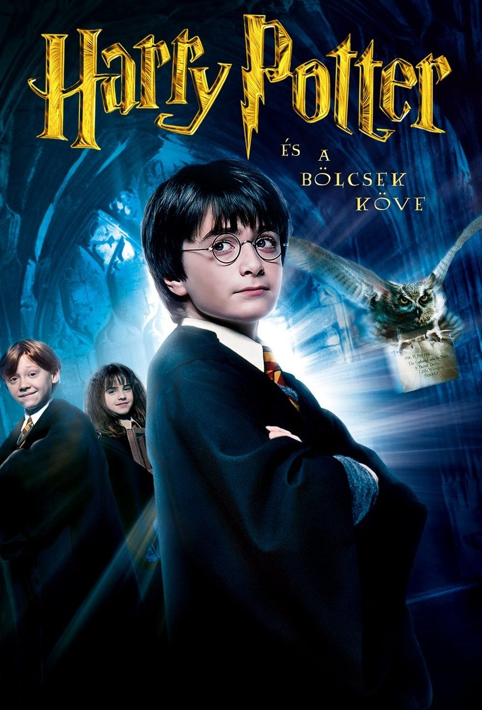

Harry Potter Movies
- Harry Potter and the Sorcerer's Stone
- Harry Potter and the Chamber of Secrets
- Harry Potter and the Prisoner of Azkaban
- Harry Potter and the Goblet of Fire
- Harry Potter és a bölcsek köve 
- Harry Potter and the Order of the Phoenix
- Harry Potter and the Half-Blood Prince
An orphaned boy enrolls in a school of wizardry, where he learns the truth about himself, his family and the terrible evil that haunts the magical world.

An ancient prophecy seems to be coming true when a mysterious presence begins stalking the corridors of a school of magic and leaving its victims paralyzed.

Harry Potter, Ron and Hermione return to Hogwarts School of Witchcraft and Wizardry for their third year of study, where they delve into the mystery surrounding an escaped prisoner who poses a dangerous threat to the young wizard.

Harry Potter finds himself competing in a hazardous tournament between rival schools of magic, but he is distracted by recurring nightmares.
A Hungarian short adaptation of 'Harry Potter and the Philosopher's Stone' made for the Hungarian version of 'The Big Read' survey.
With their warning about Lord Voldemort's return scoffed at, Harry and Dumbledore are targeted by the Wizard authorities as an authoritarian bureaucrat slowly seizes power at Hogwarts.

As Harry Potter begins his sixth year at Hogwarts, he discovers an old book marked as "the property of the Half-Blood Prince" and begins to learn more about Lord Voldemort's dark past.